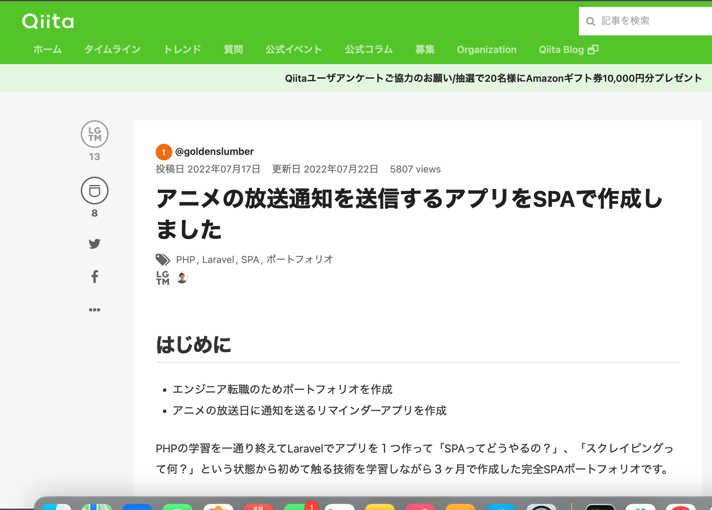

平河卓也 Portfolio Site
about me
パーソナル情報
平河 卓也（ひらかわ たくや）
1993年09月02日生まれ / 28歳
経歴
- ・2016年3月 ： 熊本学園大学 経済学部 経済学科 卒業
-
・2010年4月〜現在 ： 日本ステリ株式会社 就職
入社後、大学病院に配属されました。院内の中央材料部（院内で使用された医療機器を洗浄・滅菌する部署）にて15人程度の業務チームのリーダーとして業務管理、インシデント対応などを行ってきました。
IT学習経験
バックエンド
PHP / Laravel
フロントエンド
HTML / CSS / JavaScript / Vue.js
インフラ
AWS(VPC・EC2・ECS・Fargate・RDS・S3・CloudFront・IAM・Route53・ACM)
開発環境
Docker / MAMP
その他
Linux(基礎的なコマンド) / Git・GitHub
どの様な業務をしたいか
世の中の課題を解決するアプリの開発に携わりたいです。
その為に必要な言語やスキルを常に取り入れていける環境で働きたいです。
どの様なエンジニアになりたいか
ユーザーの抱えている課題を正確に捉えて解決できるエンジニア
ユーザーが抱えるさまざまな課題に技術で応えることのできるエンジニア
私が仕事においてやりがいを感じるのは、課題を解決をして成果が出た時です。現職で医療機器の点検作業のアクシデントが発生した際、対策として「ダブルチェックを行う」という対策が立てられました。しかし、効果も不明瞭で業務負担が倍増するという結果になり非常に大変な思いをしました。この経験から自分が対策を立てる立場になった際に原因の分析を重視して、「なぜなぜ分析」を行なったり、課題に対して「直接的原因」と「管理的原因」の2つの視点から原因を分析を行いました。また、分析の際は、職員へのヒアリングや現状の運用の見直しなどを徹底的に行い課題を解決しました。自分の頭で考えたアイデアで課題を解決し、誰かの役に立つことが非常に嬉しくやりがいを感じるようになりました。一方で、課題解決の際に運用の見直しやヒアリングではできることに限界があります。比べて、IT技術を用いたシステム化などが与える影響は大きく解決できることも多いため、技術を用いた課題解決を行いたいと思っています。そのため、技術を学び続けてどんな課題にも対応できるエンジニアになりたいです
自己PR
1. 傾聴力
業務チームのリーダーとして職員の意見などにしっかり耳を傾けました。 感情的にならずに職員の言葉を聞くことで、職員が本音を話せるようにすることを意識しました。 これによって職員が言いにくいことや、不満を正直に話してもらえるようになり職員の不安の早期払拭や課題解決の現状把握などに役に立ちました。
2. 課題解決力
原因を正しく捉えることが課題解決につながるという思いから、原因を特定するための分析を徹底的に行います。現職において残業時間の削減という課題に対して、「どの業務で残業が出ているのか」、「人員配置は適切か」など現状から原因を捉える分析を徹底的に行いそれに応じた解決策を打つことで、チームで月○○時間ほどの残業削減につながりました。
3. 自走力
必要な知識などを自分で考えて習得します。あらかじめ「実装したいもの」などのゴールとなるアウトプットを設定して必要な箇所を考え、選定・学習しアウトプットに落とし込みます。また、学習の際は、できるだけ一次情報からのインプットを意識して学習します。 個人開発のアプリ開発時には、事前学習では触れていない技術を取り入れたアプリを3ヶ月という短期間で開発しました。
個人開発実績
Anitify
制作したアプリへのリンク

アプリの概要
- ・サービス名は「Anitify」(Anime + Notify(通知))
- ・アニメ一覧からアニメをお気に入り登録して登録したアニメの放送日当日に通知を送る
- ・通知はメールで送信（LINE通知機能実装を目指しています）
ソースコード
GitHubこだわりポイント
- ・アニメの情報・放映情報はスクレイピングで取得
- ・Laravel・Vue.jsを使用して完全SPA化
- ・独自ドメイン・HTTPS化
- ・AWSにアプリをデプロイしています
使用した技術
- PHP/Larabel
- Vue.js(Vuetify, Vue CLI, Vue Router)
- Axios(HTTP通信JavaScriptライブラリ)
- Goutte(PHPのスクレイピングライブラリ)
- AWS(VPC・ECS・Fargate・RDS・S3・CloudFront・IAM・Route53・ACM)
Others
Qiitaへ技術記事投稿
投稿したQiita記事の一部
{kind=link}
こだわりポイント
- ・PHP, Larabelを中心に学習した内容のアウトプット
- ・現在4記事投稿
- ・今後も勉強した内容を積極的にアウトプットしていく
→新しい知識をインプットしアウトプットする事を常に意識しています